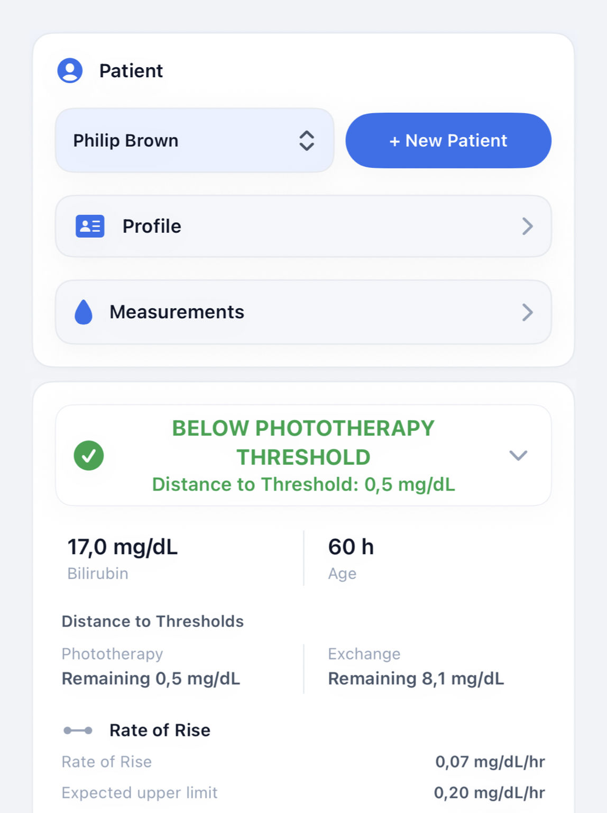
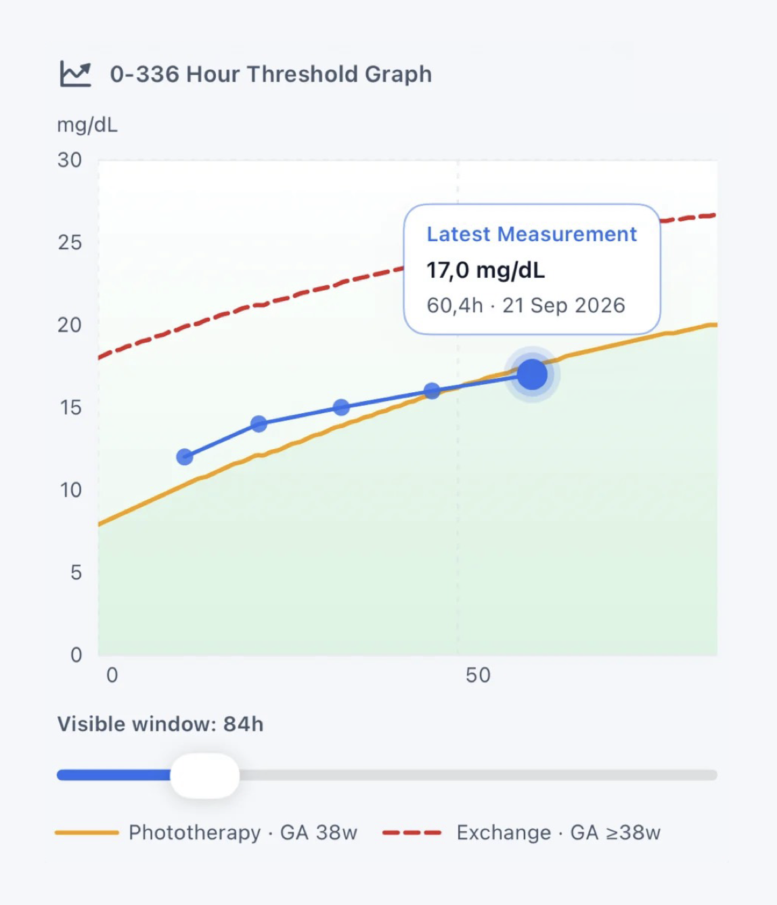
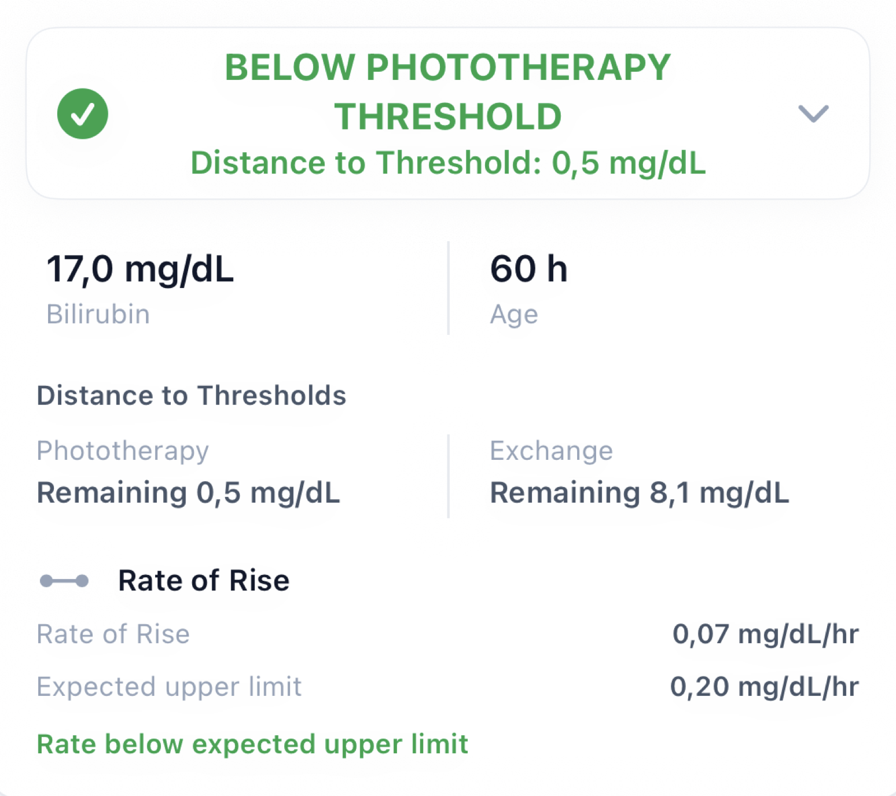
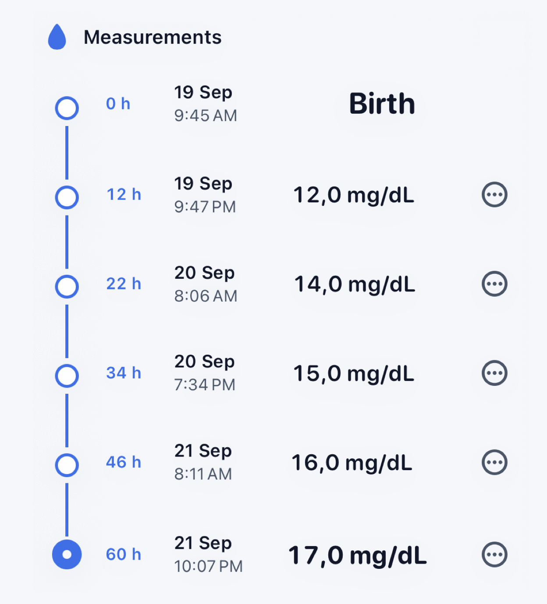
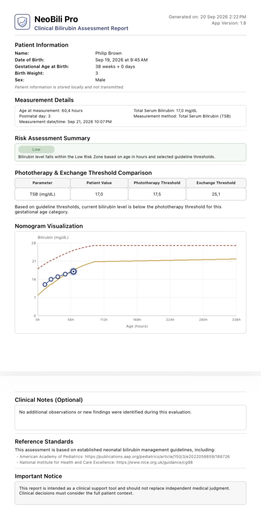
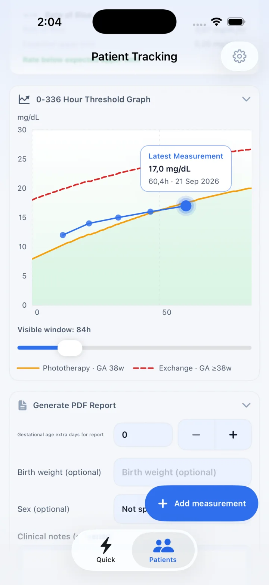

AAP 2022
Assessment for newborn infants 35 or more weeks’ gestation, using age, gestational age, and applicable neurotoxicity risk factors.
Read the AAP 2022 resource →AAP 2022 + NICE CG98
Check phototherapy and exchange thresholds using established guidance. Visualize bilirubin trends and follow patients over time.
For pediatricians, neonatologists, NICU teams, residents, and other qualified healthcare professionals.


Treatment context
Place each bilirubin measurement in context relative to the selected guideline’s phototherapy and exchange thresholds.
Serial measurements
Compare sequential measurements and calculate bilirubin rate of rise in the same clinical view.
NeoBili Pro keeps the rate, elapsed time, current value, and distance to treatment thresholds together—so the number is not separated from its clinical context.

Guideline selection
Select the framework relevant to your setting while keeping AAP 2022 and NICE CG98 clinically distinct.
Assessment for newborn infants 35 or more weeks’ gestation, using age, gestational age, and applicable neurotoxicity risk factors.
Read the AAP 2022 resource →Guidance for jaundice in newborn babies under 28 days, with treatment threshold tables and graphs interpreted by postnatal age and gestation.
Read the NICE CG98 resource →Patient Tracking
Maintain serial measurements and review how bilirubin changes over time.

Clinical documentation
Create structured PDF summaries with patient information, measurements, threshold comparisons, charts, clinical notes, references, and a clinical notice.
Review the report before sharing it through the iOS share sheet.


Clinical workflow
A clear progression from clinical data to an interpretable, documented assessment.
Privacy by design
NeoBili Pro operates offline. Patient information and measurements are stored locally and are not transmitted to NeoBili Pro servers.
Clinical Resources
Focused reference pages built from official AAP and NICE source material, with clear links back to the primary guidance.
Understand the patient inputs that determine phototherapy and exchange thresholds in the AAP framework.
Read clinical resource → Guideline referenceReview how NICE organizes assessment and treatment thresholds for newborn babies under 28 days.
Read clinical resource → Clinical conceptCalculate change over time and understand how rate should be interpreted alongside thresholds and context.
Read clinical resource → Visual referenceRead an hour-specific bilirubin graph without confusing plotted measurements with treatment decisions.
Read clinical resource → Framework comparisonCompare scope, variables, units, and threshold structure while keeping the two frameworks distinct.
Read clinical resource →FAQ
About guideline support, patient tracking, reports, and intended use.
NeoBili Pro is an iOS clinical support tool for placing neonatal bilirubin measurements in context against treatment thresholds, visualizing trends, tracking serial measurements, and generating clinical PDF reports.
NeoBili Pro supports the 2022 American Academy of Pediatrics clinical practice guideline and NICE guideline CG98. The app presents them as distinct frameworks; it does not combine them into a new guideline.
Yes. The AAP workflow accounts for age in hours, gestational age, and applicable neurotoxicity risk factors when displaying treatment thresholds.
Yes. NICE CG98 is available as a separate guideline selection with its corresponding treatment-threshold framework.
Yes. Patient Tracking supports serial, time-stamped measurements and displays them together on a longitudinal threshold graph.
Yes. NeoBili Pro can generate a structured PDF summary containing patient information, measurement details, threshold comparison, a nomogram visualization, optional clinical notes, references, and a clinical notice.
No. NeoBili Pro is a clinical support and reference tool. It does not replace independent clinical judgment, local protocols, consultation of the official guideline, or evaluation of the full patient context.
NeoBili Pro for iPhone
Compare measurements with established thresholds, visualize serial trends, and document the assessment in one focused workflow.